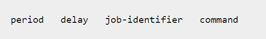
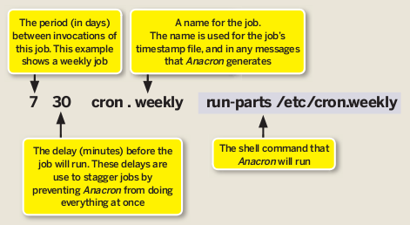

Linux计划任务
at命令
at 命令是依靠atd服务工作的。 at的计划任务都是一次性的，也就是只执行一次。
启动at服务
1 | sudo service atd start |
添加计划任务
1 | at now + 1 minute |
上述命令表示1分钟之后执行任务date。按Ctrl+D结束任务编辑。
at命令中，有很灵活的指定时间的形式。
1 | at -f file.sh 05pm + 3 days # 3天后的下午5点 |
可以管理哪些用户可以使用at命令
/etc/at.allow
at命令先查询
/etc/at.allow文件，凡事出现在该文件中的用户都可以使用at命令，这个就是所谓的白名单。/etc/at.deny
如果没有这个文件，则查找
/etc/at.deny，这个就是黑名单，凡是不在该文件中的用户都可以使用at命令。s
一般系统都是允许所有正常用户使用at命令，所以在/etc目录中存放一个空的at.deny文件。
查看当前等待运行的任务
1 | atq #查看当前还有哪些待执行任务 |
crontab命令
简介
crontab 命令常见于设置周期性被执行的命令，实现自动进行系统管理的目的。
crontab 命令从输入设备读取指令，并将其存放于 crontab 文件中，以供之后读取和执行。
通常，crontab 储存的指令被守护进程激活，crond 为其守护进程，crond 常常在后台运行，每一分钟会检查一次是否有预定的作业需要执行。
通过 crontab 命令，我们可以在固定的间隔时间执行指定的系统指令或 shell script 脚本。
时间间隔的单位可以是分钟、小时、日、月、周的任意组合。
这里我们看一看 crontab 的格式
1 | # Example of job definition: |
准备
crontab 在本实验环境中需要做一些特殊的准备，首先我们会启动 rsyslog
以便我们可以通过日志中的信息来了解我们的任务是否真正的被执行了
（在自己本地中 Ubuntu 会默认自行启动不需要手动启动）
1 | sudo apt-get install -y rsyslog |
基本用法
下面将开始 crontab 的使用了，我们通过下面一个命令来添加一个计划任务
1 | crontab -e |
第一次启动让我们选择编辑的工具，选择第二个基本的 vim 就可以了。
有的系统中没有提示，直接就是vim编辑器，也有的系统中第一个选项是nano编辑器。
每行的开头五个域，指定计划任务执行的时间和日期等，从左开始依次是：
- 分钟 m(minute)
- 小时 h(hour)
- 日 dom(day of month)
- 月 mon(month)
- 星期 dow(day of week)
最后是要执行的命令，也可以是脚本
查看计划任务/删除任务
1 | crontab -l #查看 |
crontab 的深入
每个用户使用 crontab -e 添加计划任务
都会在 /var/spool/cron/crontabs
中添加一个该用户自己的任务文档，这样目的是为了隔离
如果是系统级别的定时任务
只需要以 sudo 权限编辑 /etc/crontab 文件就可以
cron 服务监测时间最小单位是分钟
所以 cron 会每分钟去读取一次
/etc/crontab 与 /var/spool/cron/crontabs
里面的內容
每个目录的作用：
/etc/cron.daily，目录下的脚本会每天执行一次，在每天的 6 点 25 分时运行；/etc/cron.hourly，目录下的脚本会每个小时执行一次，在每小时的 17 分钟时运行；/etc/cron.monthly，目录下的脚本会每月执行一次，在每月 1 号的 6 点 52 分时运行；/etc/cron.weekly，目录下的脚本会每周执行一次，在每周第七天的 6 点 47 分时运行；
系统默认执行时间可以根据需求进行修改
在 /etc 目录中，还有一个 /etc/cron.d
目录，其中存放一些cron计划任务的配置文件，相应的任务也会得到执行
其配置格式与 /etc/crontab 文件相同。
例如：可以放置跟apache的计划任务，文件名可以命名为 /etc/cron.d/httpd。
anacron
anacron 是执行按天为最小计划时间单位的计划任务的
它并不要求计算机24×7连续运行
对于一些笔记本或者台式计算机来说，经常处于关机不工作状态，如果使用cron就会错过计划任务，但是使用anacron就可以在下一次启动后执行计划任务。
如果系统中没有anacron，则需要安装。
1 | sudo apt-get install -y anacron |
然后可以看到/etc/anacrontab文件，打开可以查看文件的内容。

anacron的配置跟cron配置不同，包含四个域：

这四个域表示的含义如下图所示：

period： 指明天数
- 1 - daily
- 7 - weekly
- 30 - monthly
- N - number of days
- @monthly - 每月执行job
delay： 执行job之前延迟的分钟数
identifier：记录job执行的时间戳的文件名
command：要执行的job，命令或者shell脚本。
在/var/spool/anacron/目录下会出现一些文件，这些文件对应着配置的job，记录了最近一次执行job的日期。